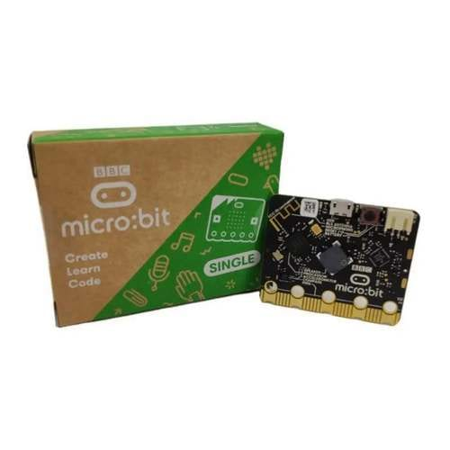

micro:bit V2

面向青少年的口袋编程板，5×5 LED 点阵与两颗按键开箱即用，内置加速度计、罗盘、麦克风、扬声器与温度传感器，支持 MakeCode 图形化与 Python，是全球课堂最流行的编程教具之一。
客观评测
micro:bit V2 搭载 Nordic nRF52833（Cortex-M4F 64MHz、512KB Flash、128KB RAM），相比 V1 新增麦克风、扬声器与触摸 Logo。5×5 LED 与两颗按键构成最简交互，边缘金手指可用鳄鱼夹接外部电路。软件支持 MakeCode 图形化与 MicroPython，教学资源覆盖全球大量中小学课程。
主观点评
micro:bit 最厉害的地方是“五分钟出作品”：孩子插上 USB，拖两个积木，LED 上就跑起自己的名字，成就感来得极快。V2 加了麦克风和喇叭后，声控、录音类玩法一下多了起来。它当然不是性能怪兽，甚至算不上正经开发板，但作为编程启蒙的敲门砖，它把门槛降到了地板上。家长和老师几乎不用懂硬件，就能陪孩子一路玩下去。
优点与不足
- 开箱即用，无需接线即可做动画、计步器、声控灯等项目
- MakeCode 图形化与 Python 平滑过渡，教学梯度好
- 全球课堂课程与教案丰富，老师备课成本低
- 512KB Flash 与 128KB RAM 限制了复杂项目
- 仅 25 个左右 IO，做大型机电项目需扩展板配合
参数规格
| 主控 | Nordic nRF52833 |
|---|---|
| 内核 | Arm Cortex-M4F，主频 64MHz |
| Flash / RAM | 512KB Flash / 128KB RAM |
| 显示 | 5×5 LED 红色点阵 |
| 按键 | 正面 2 颗可编程按键 + 背面复位键 |
| 传感器 | 加速度计、电子罗盘、麦克风、扬声器、温度/光线传感器 |
| 无线 | 蓝牙 5.0（BLE）、2.4GHz 无线电 |
| 接口 | micro-USB、边缘金手指（约 25 个可编程 IO） |
| 电源 | micro-USB 或 2× AAA 电池盒（另购） |
| 外设 | 鳄鱼夹、环形扩展接口（音频/JST） |
| 尺寸 | 约 52 × 42mm |
| 开发环境 | MakeCode（图形化/JavaScript）、Python（MicroPython）、Scratch |
| 目标用户 | 8-14 岁编程启蒙与课堂教学 |